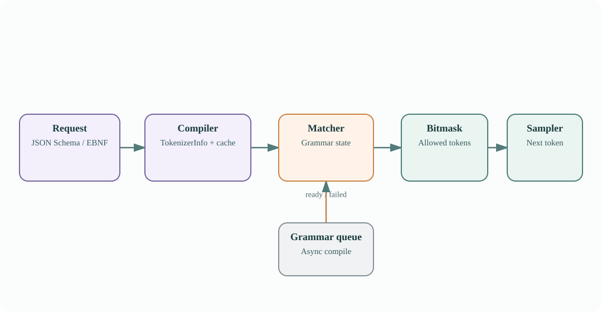
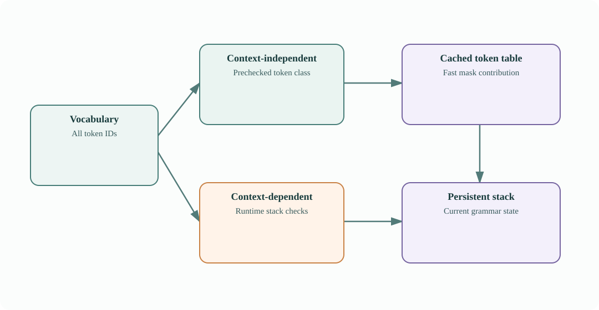

第 26 章 · SGLang 生产推理机制
XGrammar：Structured Generation 的编译与 Token Mask
从 JSON Schema、Regex、EBNF 到 GrammarCompiler、GrammarMatcher、词表 bitmask 和 scheduler 异步编译队列。
从 JSON Schema、Regex、EBNF 到 GrammarCompiler、GrammarMatcher、词表 bitmask 和 scheduler 异步编译队列。 本章区分研究论文的算法贡献、SGLang 当前源码实现、CPU-only 教学模型与硬件/部署限制。所有实现断言固定到 2026-11-23 的上游快照。
读完本章，你应该能
- 从请求入口追踪到对应的运行时状态、缓存或执行组件。
- 解释关键数据结构、数学关系、并发边界和失败模式。
- 使用可复现的 CPU-only toy 实验验证核心不变量，而不把教学代码误称为生产内核。
1. 约束生成不是事后 JSON 校验
普通生成先产生任意 token 序列，最后再尝试 json.loads；失败时你只能报错、修复或重试。Constrained decoding 把约束放进每一步采样：在当前 grammar state 下，只允许那些仍能延伸成合法结果的 token。这改变的是“候选 token 集合”，而不是模型权重。模型仍负责在合法候选中选择语义上合适的内容；语法只保证结构符合约束，不保证事实真实、字段值正确或工具调用安全。

2. JSON Schema、Regex、EBNF 与 Structural Tag
SGLang 文档提供 JSON Schema、正则表达式和 EBNF 三类请求级约束，并支持 Structural Tag。单个请求只能选择一种 constraint 参数；不要把 JSON Schema 和 regex 同时塞进同一请求，期待它们自动取交集。Grammar backend 是可替换实现：XGrammar、Outlines、Llguidance 的支持语法集合并不完全相同。当前文档将 XGrammar 作为默认后端；Outlines 支持 JSON Schema 与 regex，Llguidance 支持 JSON Schema、regex 与 EBNF。部署时要以当前版本和 tokenizer 兼容性为准。
入口文档：Structured Outputs。
3. 从 API 参数到编译后的 Grammar
请求携带 json_schema / regex / ebnf / structural_tag 后，Scheduler 侧的 GrammarManager 先构造 request grammar key。key 会进一步结合 origin input IDs 与 thinking budget；req.require_reasoning 则作为独立参数传给 cached-or-future lookup，并在命中后应用 reasoning config。这样既避免不兼容请求误用同一个编译结果，也把 grammar identity 与 reasoning mode 的处理边界分开。随后 backend 查找 cached-or-future value。缓存命中可直接绑定 grammar object；未命中则将请求移入 grammar_queue，等待编译完成。编译错误会转成 request abort，而不是把非法 grammar 当成“空约束”继续生成。
源码：GrammarManager.process_req_with_grammar · XGrammarGrammarBackend。
4. XGrammar 的核心：把词表检查拆成两类
对每个 grammar state，理论上都要判断整个 vocabulary 中哪些 token 可接受。XGrammar 的关键优化是把 token 拆成 context-independent 与 context-dependent 两类：前者可预检查，后者仍需根据当前栈状态解释。XGrammar 论文进一步通过 grammar context expansion、persistent stack 和与推理引擎协同重叠，降低每 token 的 CPU 约束开销。这不是“所有 token mask 永远固定”。动态部分仍由当前 grammar state 决定；预计算只是把不依赖当前上下文的工作提前做掉。

5. Token mask 如何进入 GPU logits
XGrammarGrammar 维护 GrammarMatcher。每轮可调用 fill_next_token_bitmask 写入 vocabulary bitmask，再把 mask 以 non-blocking copy 移到目标设备，最后通过 Triton / CUDA 等 token-bitmask operator 将不合法 token 的 logits 屏蔽。采样器只在合法集合中选 token；accept_token 随后推进 matcher 状态。因此需要区分三件事：grammar compiler 负责构造状态机；matcher 负责跟踪某条输出当前处于哪个状态；bitmask kernel 负责把合法集合应用到 logits。它们不是一个“JSON parser”函数。
6. GrammarManager：编译异步化与多 rank 一致性
Grammar 编译可能比一次 decode token 的调度周期更慢，所以请求可以先停在 grammar_queue，而不是阻塞整个 scheduler。get_ready_grammar_requests 会收集 ready 与 failed request indices；DP/TP ranks 需要对 ready 集合取交集、failed 集合取并集，再由 PP rank 0 将结果同步到后续 pipeline ranks。这是一条分布式一致性路径：某个 rank 编译成功，并不意味着全体 rank 已经可以安全地开始使用该 grammar。错误与超时也需要同步传播。
7. Reasoning 模型：让思考自由、让最终答案受约束
对带有 <think>...</think> 的 reasoning model，常见需求是允许 reasoning section 自由生成，而只在最终答案阶段启用 JSON / EBNF 约束。SGLang 将 reasoning parser 提供的 think-end token 与 grammar state 结合，避免把中间推理文字错误地限制成 JSON。Native API 与 Chat Completions 的请求参数在当前文档中有细节差异：Native API 的特定路径需要显式 require_reasoning；不要把一个 API 的 workaround 泛化成全部接口都必需。
8. 失败模式与正确性边界
第一，tokenizer 不兼容时 XGrammar 初始化可能失败，不能默默声称约束仍有效。第二，schema 编译失败应暴露错误；第三，grammar cache 受内存预算影响，缓存策略会影响重复 schema 的编译成本。第四，结构合法不等于语义正确：例如 schema 允许任意字符串时，模型仍可能给出错误事实。结构化生成的性能也不是“零成本”。论文报告的加速结果来自特定基线、实现与硬件；不能将论文数字直接写成所有模型/后端的 SGLang 线上收益。
9. 交互：选择机制配置
Mechanism selector
默认优先路径：使用 tokenizer-aware GrammarCompiler，缓存 compiled grammar，再按 matcher state 生成 token bitmask。仍需检查 tokenizer 支持与结构标签格式。
替代后端：当前文档列出的支持范围为 JSON Schema 与 Regex。不能假设 EBNF 或 structural tag 的能力与 XGrammar 完全一致。
另一种实现：当前文档列出 JSON Schema、Regex、EBNF。切换后应重新验证语法特性、性能与模型 tokenizer 兼容性。
交互只改变教学状态，不会启动真实 SGLang server 或调用 GPU kernel。
10. 源码阅读路线与参考资料
- Structured Outputs 文档：约束类型、API 与 backend 选择。
- Reasoning Models 文档：think boundary 与 constrained final answer。
- xgrammar_backend.py：TokenizerInfo、GrammarCompiler、Matcher 与 token mask。
- grammar_manager.py：请求队列、缓存与 rank synchronization。
- XGrammar · MLSys 2025：结构化生成引擎设计。
实现快照：sgl-project/sglang@563813c0d60282fa848382fec600b40d28ddec98。第 04 章讲前端 DSL 与 grammar 基础；本章聚焦运行时编译、mask 与 scheduler 协同。